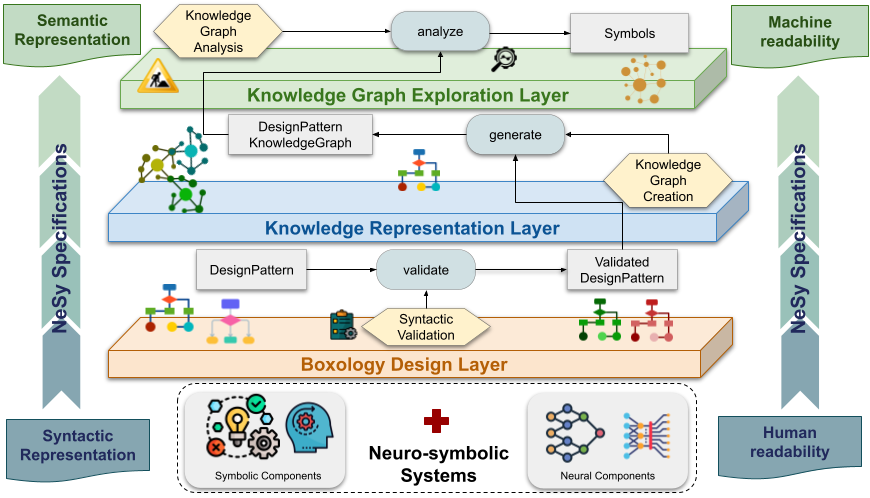

Graphical Abstract
A layered framework for constructing and analyzing NeSy systems that integrate symbolic and neural components. The Boxology Design Layer ensures syntactic correctness of architectures, the Knowledge Representation Layer transforms validated designs into Knowledge Graphs, and the Knowledge Graph Exploration Layer enables their querying (via SPARQL) and analysis.